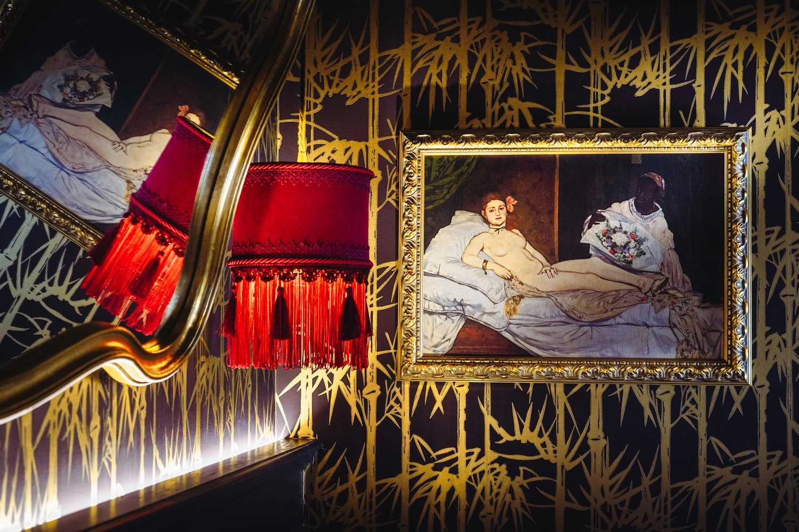
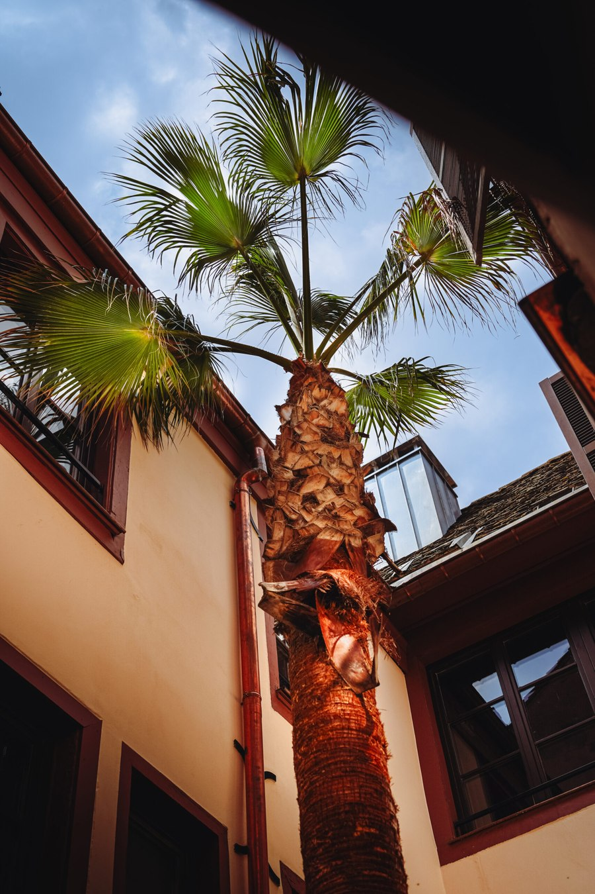
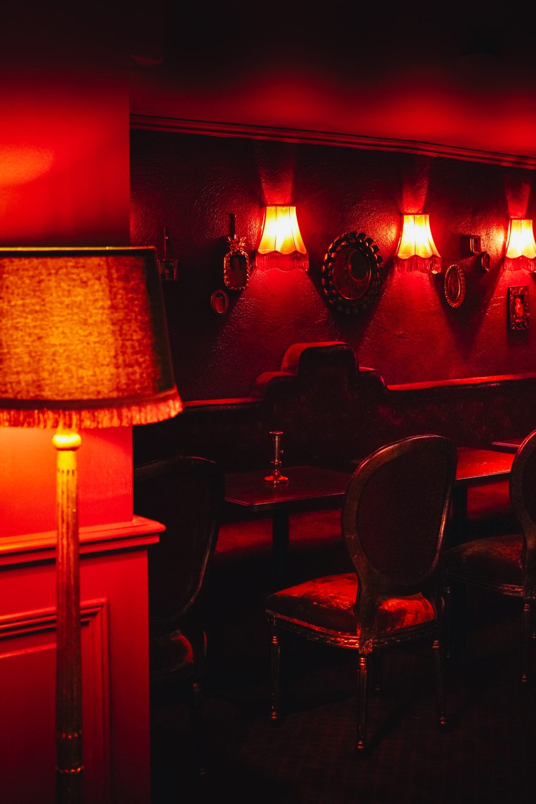
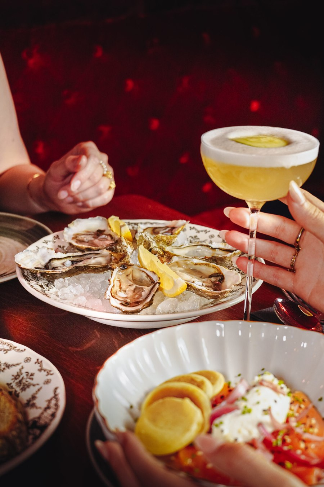

Madame C, à Strasbourg : douze chambres qui portent chacune le nom d'un tableau
Un hôtel particulier de la rue des Sœurs converti en boudoir Belle Époque, à deux pas de la cathédrale. Douze chambres, un palmier dans la cour, et pas un mètre carré de spa.

L'Olympia de Manet, à laquelle une chambre emprunte son nom. Photo : Madame C, site officiel.
L'essentielCe qu'il faut savoir avant de réserver
- Douze chambres, trois catégories. Les Élégantes font 13 à 16 m², les Précieuses 22 à 30 m², les Divines 26 à 28 m². L'écart est réel : lisez la surface avant de réserver.
- Un bar-restaurant, L'Alcôve, ouvert aux clients extérieurs, et un brunch le dimanche et les jours fériés, de 10h30 à 15h.
- Aucun spa. C'est la limite de la maison, et nous y revenons plus bas. Réservé aux adultes.
Strasbourg ne manque pas d'hôtels de charme, mais elle manquait d'un hôtel qui assume un parti pris jusqu'au bout. Le Madame C, ouvert rue des Sœurs à l'été 2025, en est un. La profession l'a d'ailleurs remarqué avant nous : le 25 juin 2026, à l'InterContinental Le Grand à Paris, la maison a reçu le prix de l'Iconic Upscale & Midscale Hotel Opening lors de la première édition des Hospitality Icons, organisées par Hospitality ON. L'hôtel est dirigé par Geoffroy Schmitt-Gully et exploité par le groupe strasbourgeois Faktory. Nous l'évaluons 9,0/10 au Score LMHS, avec un Indice Belle Époque de 4,6/5, notre indice thématique pour cette page.
Un parti pris décoratif tenu du hall à la salle de bains
La maison se donne pour ce qu'elle est dès l'entrée : dorures, lumières basses, velours, moquette épaisse, tissus lourds, couleurs profondes. Le registre est celui du boudoir Belle Époque, et il est tenu partout, sans rupture. C'est plus rare qu'il n'y paraît. La plupart des hôtels dits « à thème » s'arrêtent au lobby et livrent des chambres neutres ; ici, la cohérence va jusqu'aux abat-jour à franges et aux poignées.
Au centre, une cour intérieure plantée d'un palmier qui monte chercher la lumière entre les toits alsaciens. L'image est incongrue, et c'est exactement le propos de la maison : un morceau d'ailleurs posé dans un îlot du centre ancien. L'établissement diffuse par ailleurs sa propre signature olfactive, ce qui participe du même travail d'atmosphère.

Le palmier de la cour, entre les toits du centre ancien. Photo : Madame C, site officiel.
Douze chambres, et un écart de surface qu'il faut connaître
Les douze chambres portent chacune un prénom et renvoient à une figure de la peinture : Olympe pour l'Olympia de Manet, Cléo, Angèle, Mado. Une reproduction de l'œuvre est accrochée dans la chambre, et le décor en reprend les tonalités. Le procédé pourrait être appuyé ; il fonctionne parce que chaque chambre est traitée entièrement, pas seulement signalée par un cartel.
Le point à vérifier avant de réserver est la surface, parce que l'écart entre les catégories est considérable pour une maison de cette taille. Les Élégantes font 13 à 16 m², ce qui est petit ; les Précieuses 22 à 30 m² ; les Divines 26 à 28 m². Autrement dit, une Précieuse peut être plus grande qu'une Divine, et une Élégante fait la moitié des autres. Les intitulés ne disent pas la taille : le tableau des surfaces, oui.

Un des salons. Photo : Madame C, site officiel.
L'Alcôve, la table et le bar qui font vivre la maison
Au rez-de-chaussée, L'Alcôve tient à la fois du salon, du bar à cocktails et du restaurant. C'est l'espace qui empêche la maison de n'être qu'un décor : on y vient de l'extérieur, ce qui donne à l'hôtel une vie que douze chambres ne suffiraient pas à produire. La carte joue les assiettes à partager, et le bar la mixologie.
Le brunch du dimanche et des jours fériés, de 10h30 à 15h, est le meilleur moyen de juger de la maison sans y dormir, et probablement le meilleur rapport qualité-découverte de l'adresse. Le petit-déjeuner, lui, est facturé en supplément.

L'Alcôve, au rez-de-chaussée. Photo : Madame C, site officiel.
Ce que la maison n'a pas
Il faut le dire clairement, parce que notre lectorat vient souvent chercher cela : le Madame C n'a pas de spa. Ni sauna, ni hammam, ni piscine, ni cabine de soin. Sur un site consacré aux hôtels et aux spas, c'est une absence qui compte, et elle place l'adresse hors jeu pour un séjour bien-être. Des projets d'aménagement dans les combles ont circulé dans la presse ; l'établissement n'en annonce aucun sur son site, et nous ne les présentons donc pas comme acquis.
Deux autres points à connaître. La maison est réservée aux adultes : ce n'est pas une adresse de famille, et c'est assumé. Et les animaux ne sont pas admis au bar ni au restaurant, ce qui limite l'intérêt d'y venir accompagné d'un chien, même si les chambres les acceptent.
Madame C en bref
| Adresse | 10 rue des Sœurs, 67000 Strasbourg |
| Téléphone | +33 3 88 78 85 78 |
| Courriel | hello@madamec-strasbourg.fr |
| Catégorie | 4 étoiles, boutique-hôtel |
| Capacité | 12 chambres |
| Catégories de chambres | Élégantes 13-16 m², Précieuses 22-30 m², Divines 26-28 m² |
| Table et bar | L'Alcôve, bar à cocktails et restaurant, ouvert aux extérieurs |
| Brunch | Dimanches et jours fériés, 10h30 à 15h |
| Spa | Aucun |
| Clientèle | Réservé aux adultes |
| Score LMHS | 9,0/10 · Indice Belle Époque 4,6/5 |
Informations relevées le 26 août 2026 sur le site officiel de l'établissement.
Pour qui, et à quelles réserves
Pour qui. Pour un week-end en couple à Strasbourg, dans une maison qui a une idée et la tient. Pour ceux que les hôtels de chaîne lassent. Pour qui compte sortir le soir : L'Alcôve dispense de chercher où dîner, et l'emplacement met la cathédrale à quelques minutes.
Nos réserves. D'abord l'absence de spa, déjà dite, qui disqualifie l'adresse pour un séjour bien-être. Ensuite la surface des Élégantes : treize mètres carrés, c'est peu, et le parti pris décoratif chargé y sera d'autant plus présent. Enfin, le décor est un engagement : velours, dorures, lumières basses et couleurs profondes ne conviennent pas à tout le monde, et une maison qui tient son parti pris aussi fermement ne laisse pas de porte de sortie à qui n'y adhère pas. C'est ce qui en fait l'intérêt, et c'est aussi ce qui doit faire réfléchir avant de réserver.
FAQ : Madame C, Strasbourg
Combien de chambres compte le Madame C, et de quelles tailles ?
Douze, réparties en trois catégories dont les surfaces diffèrent nettement : les Élégantes font 13 à 16 m², les Précieuses 22 à 30 m², les Divines 26 à 28 m². Une Précieuse peut donc être plus grande qu'une Divine. Vérifiez la surface plutôt que l'intitulé au moment de réserver.
Le Madame C a-t-il un spa ?
Non. L'établissement ne dispose ni de sauna, ni de hammam, ni de piscine, ni de cabine de soin. Des projets d'aménagement dans les combles ont été évoqués dans la presse, mais la maison n'en annonce aucun sur son site officiel, et nous ne les présentons pas comme acquis. Pour un séjour bien-être à Strasbourg, il faut chercher ailleurs.
Peut-on dîner à L'Alcôve sans dormir à l'hôtel ?
Oui. L'Alcôve fonctionne comme un bar à cocktails et un restaurant ouverts à la clientèle extérieure, au rez-de-chaussée de la maison. C'est aussi le moyen le plus simple de juger de l'endroit avant d'y réserver une nuit. Un brunch est servi les dimanches et jours fériés, de 10h30 à 15h.
Le Madame C accepte-t-il les enfants et les animaux ?
L'établissement est réservé aux adultes. Les animaux ne sont pas admis au bar ni au restaurant ; pour les conditions exactes en chambre et l'éventuel supplément, le plus sûr est d'appeler la maison au +33 3 88 78 85 78.
Où se situe le Madame C dans Strasbourg ?
10 rue des Sœurs, 67000 Strasbourg, dans le centre ancien, à quelques minutes à pied de la cathédrale et de la place du Marché Gayot. L'emplacement est calme tout en restant au cœur de la ville, ce qui est l'un des arguments réels de l'adresse.
Le mot de SwannUn parti pris, et le courage de ne pas plaire à tout le monde
La plupart des hôtels de charme cherchent le consensus, et finissent par se ressembler. Le Madame C fait l'inverse : il choisit un registre, le pousse jusqu'à la poignée de porte, et accepte de laisser dehors ceux qui n'aiment pas ça. Je trouve la démarche plus intéressante qu'un beige irréprochable, et je note l'adresse pour cela. Cela dit, deux choses doivent être écrites plutôt que tues : il n'y a pas de spa, et les chambres d'entrée de gamme font treize mètres carrés. Ce sont des faits, pas des reproches. Ils changent simplement le genre de séjour qu'on vient chercher ici : une nuit de ville, un dîner et un cocktail, pas un week-end de repos.
Swann Bertaud, rédacteur hôtellerie de luxe
Méthode et sources
Avis noté 9,0/10 au Score LMHS, issu de la grille LMHS employée dans nos avis d'établissement, et 4,6/5 à l'Indice Belle Époque, indice thématique propre à cette page : cohérence du parti pris décoratif, tenue de ce parti pris d'un espace à l'autre, travail de l'atmosphère, singularité de l'adresse dans sa ville. Aucun séjour de contrôle n'a été effectué, et nous ne prétendons pas le contraire : nous n'avons pas dormi ici. Adresse, capacité, catégories et surfaces de chambres, restauration, horaires du brunch et politique d'accueil ont été relevés le 26 août 2026 sur le site officiel de l'établissement. Les projets d'aménagement d'un espace bien-être évoqués ailleurs n'étant pas annoncés par la maison, ils ne sont pas présentés comme acquis. La distinction reçue aux Hospitality Icons 2026 a été recoupée auprès de la presse professionnelle. Aucun partenariat commercial, aucune affiliation. Photographies : site officiel de l'établissement.
Pour aller plus loin
- Hôtels de charme en Alsace : 14 maisons classées, dont plusieurs adresses strasbourgeoises
- Meilleurs hôtels à Colmar : 7 adresses classées, à quarante minutes de train
- Les 50 meilleurs hôtels et spas de France, palmarès national 2026
- Villa Colette, Cap-Ferret, avis, l'autre maison de ce site qui tient un parti pris décoratif jusqu'au bout
- Notre méthode, les grilles de notation et les règles d'indépendance